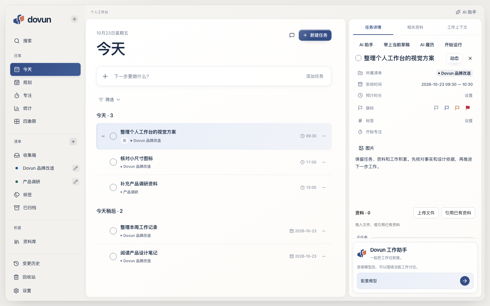

<!doctype html><html lang="zh-CN"><meta charset="utf-8"><meta name="viewport" content="width=device-width, initial-scale=1"><title>Dovun · 实际应用交付预览</title><style>
*{box-sizing:border-box}body{margin:0;background:#171d27;color:#edf0f6;font:14px/1.6 system-ui,sans-serif}header{padding:22px 28px;border-bottom:1px solid #ffffff18;display:flex;gap:22px;flex-wrap:wrap;align-items:center}h1{margin:0;font-size:21px;letter-spacing:-.5px}p{margin:3px 0;color:#a6b2c7}button,a{font:inherit}button{cursor:pointer;border:1px solid #ffffff1a;border-radius:8px;background:#242e3e;color:#d9e2f2;padding:7px 13px}button[aria-pressed=true]{color:#1e2f4b;background:#d7e4fa}nav{display:flex;gap:7px;flex-wrap:wrap;padding:16px 28px}main{padding:0 28px 28px;max-width:1800px;margin:auto}img{display:block;width:100%;border-radius:14px;box-shadow:0 15px 60px #0004}figure{margin:0}figcaption{margin:10px 0 24px;color:#9eacc2;font-size:12px}.pair[hidden]{display:none}.pair{display:grid;grid-template-columns:1fr 1fr;gap:20px}.pair img{height:auto}small{font-size:12px;color:#9eacc2}.mobile img{width:390px;max-width:100%;margin:auto}a{color:#bcd3f7}button:focus-visible,a:focus-visible{outline:2px solid #aac7f8;outline-offset:3px}@media(max-width:800px){header,nav{padding:16px}.pair{grid-template-columns:1fr}main{padding:0 12px 20px}}
</style><header><div><h1>Dovun · 实际应用</h1><p>真实 React 页面与隔离测试数据。这里展示截图，不是可点击产品样板。</p></div><div><button id="light" aria-pressed="true">A 瓷白浅色</button> <button id="dark" aria-pressed="false">B 石墨深色</button></div><small>源码与测试进度见 <a href="README.md">实施记录</a> · 未安装或部署</small></header><nav id="nav"></nav><main><figure id="actual"><figcaption id="caption">今天与任务详情 · 1586 × 992 · 实际应用截图</figcaption></figure><div class="pair" id="comparison" hidden><figure><figcaption>已确认的生成效果图：视觉方向参考，内容为概念内容</figcaption></figure><figure><figcaption>实际应用：真实日期规则、任务详情和无模型助手入口</figcaption></figure></div><p>任务、资料、记忆与 AI 保留原有业务边界；浅深色共用布局，编辑器和助手复用同一实例。</p></main><script>
const pages=[['today','今天 / 详情'],['plan','规划'],['library','资料库'],['knowledge','工作上下文'],['settings','设置'],['mobile','390px 手机'],['en','English'],['compare','与效果图对照']];let theme='light',page='today';
const $=id=>document.getElementById(id);for(const [key,label] of pages){const b=document.createElement('button');b.textContent=label;b.onclick=()=>{page=key;render()};b.dataset.page=key;$('nav').append(b)}
$('light').onclick=()=>{theme='light';render()};$('dark').onclick=()=>{theme='dark';render()};function render(){for(const t of ['light','dark'])$(t).setAttribute('aria-pressed',String(t===theme));for(const b of $('nav').children)b.setAttribute('aria-pressed',String(b.dataset.page===page));$('actual').hidden=page==='compare';$('comparison').hidden=page!=='compare';$('actual').className=page==='mobile'?'mobile':'';const stem=page==='mobile'?'today-390':page==='en'?'today-en':page==='compare'?'today':page;$('screen').src=`evidence/${stem}-${theme}.png`;$('caption').textContent=`${pages.find(x=>x[0]===page)[1]} · ${page==='mobile'?'390 × 844':'1586 × 992'} · 实际应用截图`;$('reference').src=`../visual-exploration/round-01/${theme==='light'?'a-porcelain':'b-ink'}.png`;$('compareActual').src=`evidence/today-${theme}.png`;}render();
</script></html>
